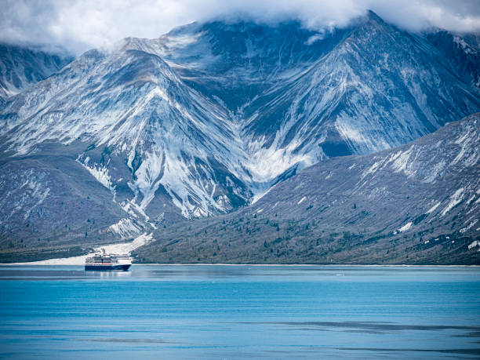
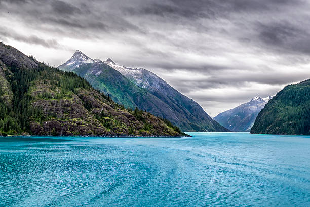
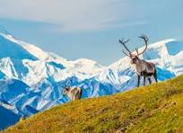
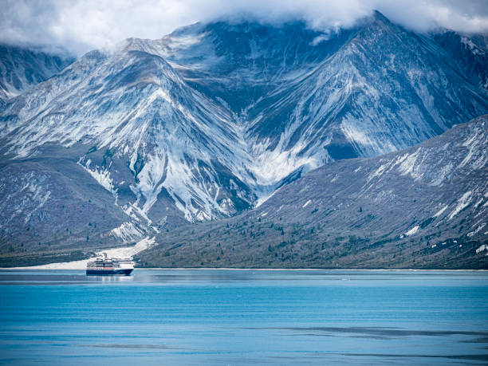
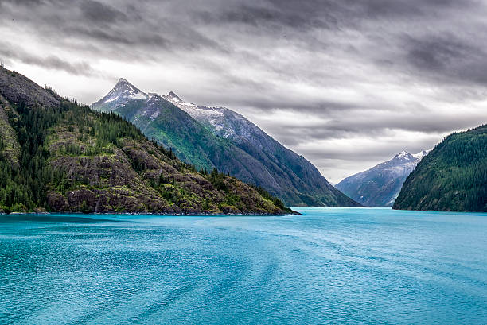
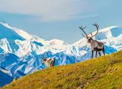
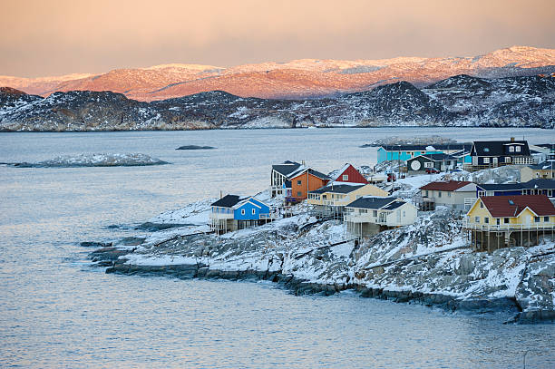
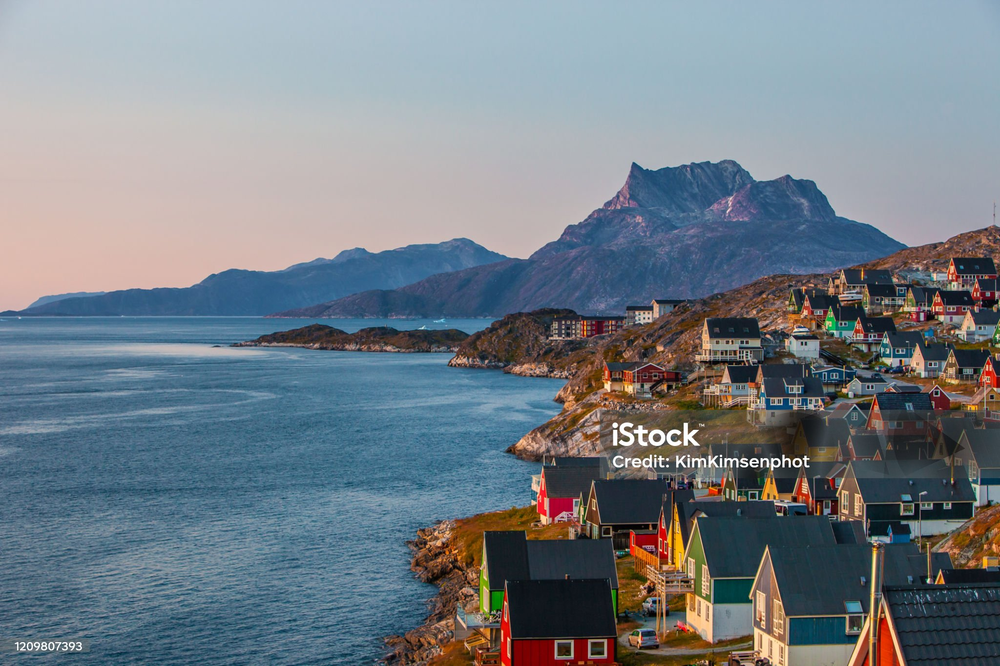

WorldNearUs
Experiencing different places,people, culture ,lifestyle,autheuntic foods from cities to village we feel we born again with full of hope
and start to learn from scratch. The weather isnt always reliable, but there is a surplus of excellent events scheduled across the continent.
From the age-old traditions of lively carnival celebrations and abroad to ski slopes stacked with fresh powder and northern lights adventures in the Arctic, narrow down the
list of best places to visit is somewhat of a challenge.But pre-planning makes it easy.
List of places:
- Alaska
 





- Greenland




- Paris

:max_bytes(150000):strip_icc()/7-paris-social-niche1115-c0245573f1a8440da95ba8bd2fa82d7c.jpg)

:max_bytes(150000):strip_icc()/10-paris-social-niche1115-58e4391881554406b0259b17dd02bb24.jpg)
- India


- Egypt


Alaska to do list:
Alaska is a non-contiguous U.S. state on the northwest extremity of North America. It borders British Columbia and Yukon in Canada to the east and it shares a western maritime border in the Bering Strait with Russia's Chukotka Autonomous Okrug.
Kenai Fjords National Park
Glacier Bay National Park and Preserve
Alaska Wildlife Conservation Center
Anchorage Museum
Mendenhall Glacier
Greenland to do list:
Greenland is a North American autonomous territory of the Kingdom of Denmark. It is the largest autonomous territory within the Kingdom and one of two such territories within the Kingdom, the others being the Faroe Islands; the citizens of both territories as well as Denmark proper are all citizens of Denmark.
Ilulissa fjord
Greenland National Museum and Archives
Jakobshavn Glacier
Uunartoq Hot Springs
Northern Lights Private Boat Tour | Nuuk
paris to do list:
Paris, France's capital, is a major European city and a global center for art, fashion, gastronomy and culture. Its 19th-century cityscape is crisscrossed by wide boulevards and the River Seine. Beyond such landmarks as the Eiffel Tower and the 12th-century, Gothic Notre-Dame cathedral, the city is known for its cafe culture and designer boutiques along the Rue du Faubourg Saint-Honoré.
Eiffel Tower
Cathédrale Notre-Dame de Paris
Palais Garnier
The Centre Pompidou
Palace of Versailles
India places to visit:
India, officially the Republic of India, is a country in South Asia. It is the seventh-largest country by area; the most populous country as of June 2023; and from the time of its independence in 1947, the world's most populous democracy.
Taj Mahal
Sri Harmandir Sahib
Mysore Palace
Goa
Kerala Backwaters
Egypt to do list:
Egypt, a country linking northeast Africa with the Middle East, dates to the time of the pharaohs. Millennia-old monuments sit along the fertile Nile River Valley, including Giza's colossal Pyramids and Great Sphinx as well as Luxor's hieroglyph-lined Karnak Temple and Valley of the Kings tombs. The capital, Cairo, is home to Ottoman landmarks like Muhammad Ali Mosque and the Egyptian Museum, a trove of antiquities.
Egyptian Museum & Great Pyramids Of Giza
Egypt Cultural Tour
the Red Sea & Desert Safari
Cruise Adventure on the Nile River
the Abu Simbel Temples & Boat to Elephantine Island